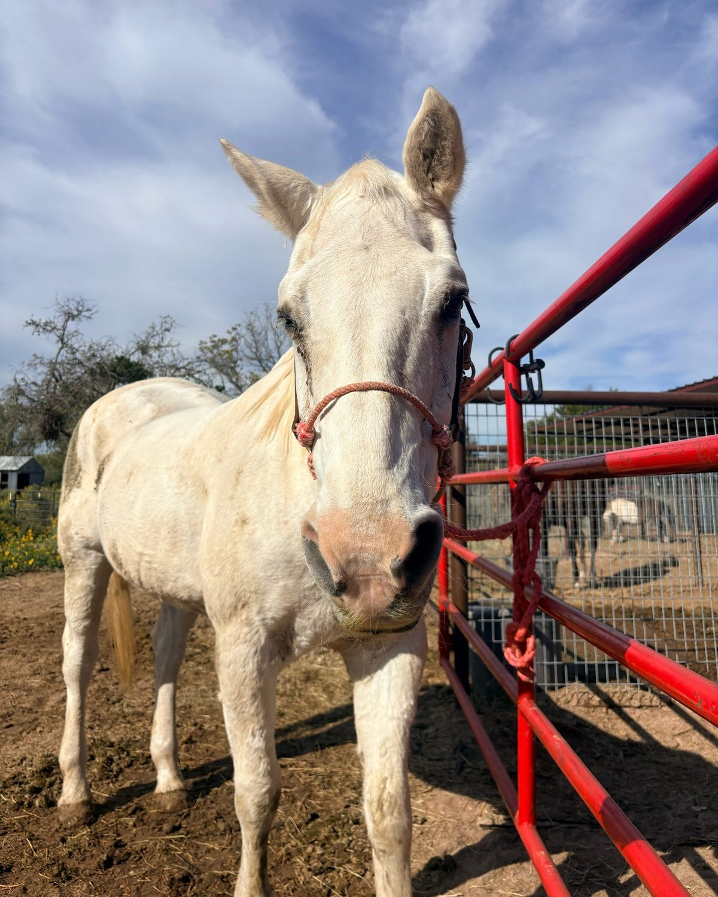
Campaign Proposal for
Butterfly Rescue Ranch
MKT 4970 Integrated Marketing Communications
Price College of Business, University of Oklahoma
November 2026
Rico today, at the ranch in Norman
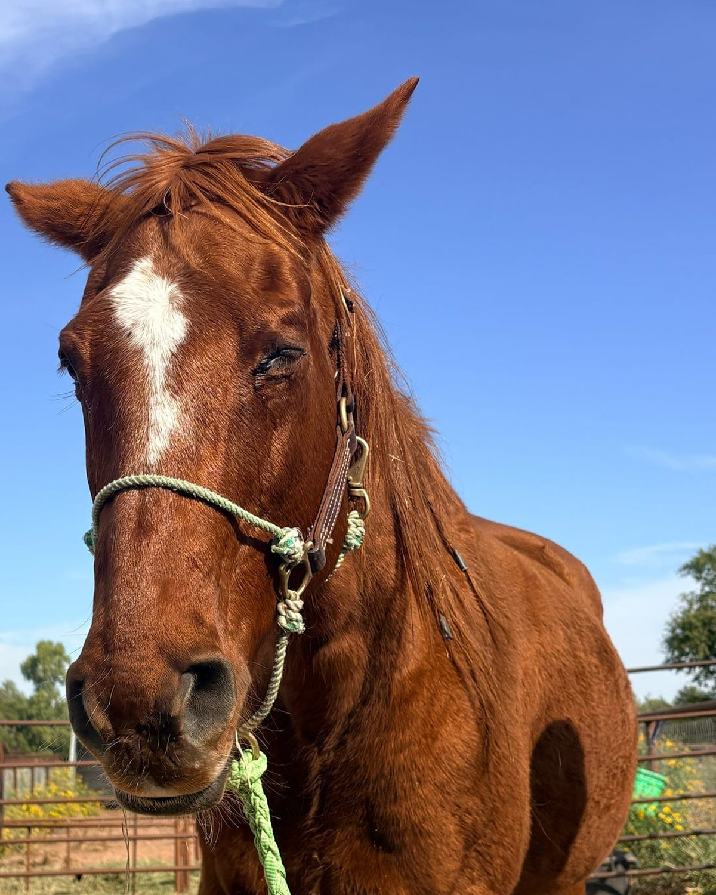
Reba“Because of her sweet spirit, she’s been able to be used for lessons for beginner riders.” Ranch staff
The Campaign
Campaign idea, Rico’s story, the touchpoint map, billboard, radio, print and the brand kit
Campaign Idea
Proposition
Every horse has a story; every loving heart deserves to see it.
The Idea
Every horse deserves a second chance, but rescue doesn’t end when a horse is saved. Through Rico’s story, Butterfly Rescue Ranch will show the ongoing commitment, care, and resources it takes to give horses a safe and healthy future. By sharing real rescue stories, breaking down the costs of horse care, and showing supporters how they can contribute, the campaign will turn awareness into meaningful, ongoing support for the ranch.
Primary Audience
Donors are the primary audience, with volunteers and Norman community members as secondary audiences. Braxton confirmed that financial donations are the ranch’s greatest need, although feed, hay, horse supplies, and volunteer time are also valuable contributions.
Giving Tuesday
Giving Tuesday, December 1, 2026: Launch a fundraising campaign featuring Rico’s rescue story, an introduction to the ranch’s mission, and a transparent breakdown of horse care costs. Encourage supporters to contribute toward the $2,000–$3,000 fundraising goal by January 2027 through monetary donations, supplies, and other resources.
(While this should remain a recommendation, we may need to push it to the following year so we are able to create an audience for her before launching a social media campaign.)
How many months of one horse’s care the goal would cover, at about $360 a month (our arithmetic from Braxton’s figures)
02
Rico’s Journey
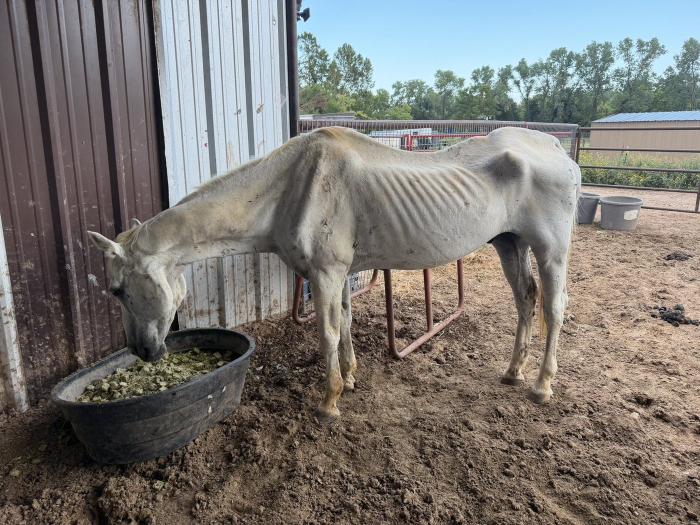
When he first arrived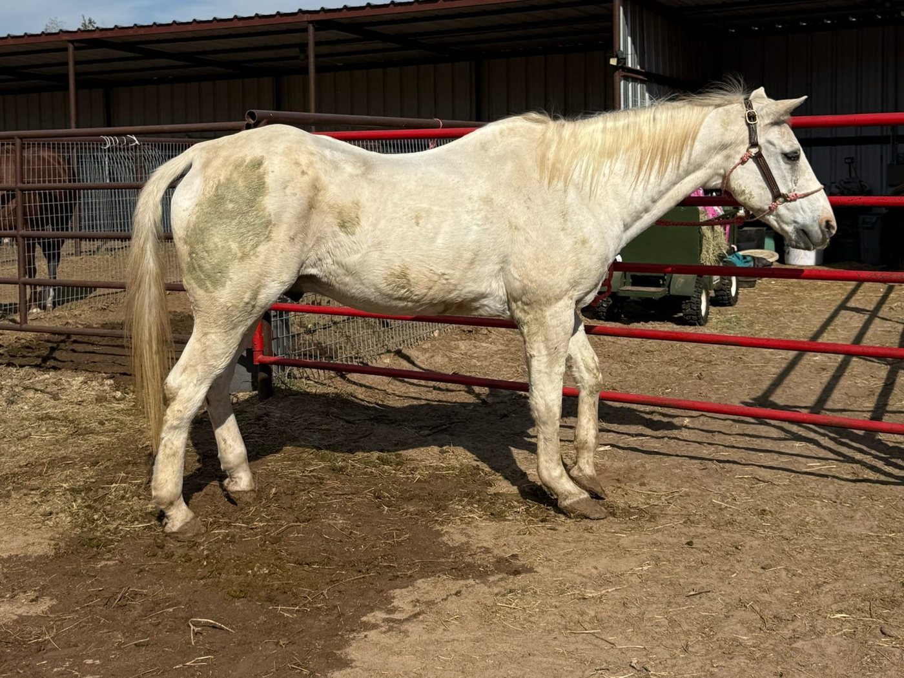
TodayRico was pulled from a kill pen, nursed back to health, and rehomed, but that home failed him. He came back to us in worse condition than before, and now he has found his forever home with us, here at Butterfly Rescue Ranch.
Support Rico and horses like him today.
Words from the print ad, “Rico’s Journey.” Before-and-after photos from the class’s homepage files.
03
Problem
Key findings
- Inconsistent Social Media: no Instagram or Facebook posts since July 2025
- Limited brand awareness in the Norman community
- Complicated Donation Process: 8+ clicks just to send an inquiry
What supporters want
- Real horse rescue stories
- Clear proof of how donations make an impact
- An easier way to get involved.
Butterfly Rescue Ranch has a compelling mission, but inconsistent posting and a hard-to-follow donation process make it hard for supporters to connect and give.
Solution
- Consistent Brand Guide: unified colors, fonts, messaging, and photography across all platforms, while keeping the ranch’s existing identity
- Manageable Content Calendar: 2–3 posts per week featuring horse spotlights, rescue stories, behind-the-scenes content, and community events
- Simpler Giving: make donation options more visible and accessible, and share regular impact updates showing how gifts help the horses
- Community Engagement: promote volunteer opportunities, petting zoo experiences, and other ways Norman residents can get involved
04
Butterfly Ranch Touchpoint Map
Customer journey · Discover → Engage → Give → Stay · Prepared by LW
Website
Built
Social media
Built
PR / local news story
Built: press release drafted
Print / radio / billboard ads
Planned: concepts drafted
Community partners
Planned: research completed; outreach not confirmed
Word of mouth and referrals
Missing: no formal strategy documented
Horse journey series (social)
Planned: content ideas planned: Rico before and after facebook post. Butterfly Rescue Ranch Horse Facebook Spotlight
Welcome email
Built (Email Drafted)
On-site signage and QR codes
Missing
Birthday party (the event)
Existing activity discussed; package details not confirmed
Volunteer days and meet‑and‑greets
Missing: no established volunteer process
Donate page
Built: team revisions completed for Charlie’s website
Sponsor‑a‑horse
Built · Sponsor‑a‑horse page
Volunteer sign-up
Built · Volunteer page
Giving Tuesday / year‑end giving
Planned: launch strategy still needed
Donor thank‑you and receipt
Built: donation thank‑you email outlined · 3 Email Plans
Impact report (where the money goes)
Missing
Party follow-up / sponsorship
Missing: requires Braxton’s approval
Sponsor updates
Built: monthly sponsor update email outlined · 3 Email Plans
05
Billboard + Radio Script
Two billboard options; the board turns between them
Proposed location: along I-35, just north of Lindsey Street in Norman, Oklahoma.
Why: I-35 is the main corridor connecting Norman with Oklahoma City, and with towns to the south, so it reaches horse owners from across the region, not just Norman residents.
$1,600 to $1,800 per 4-week period (estimate)
Radio Script
1Sound effect
The sharp sound of the gate latch, followed by heavy footsteps on the gravel and a soft whinny.
2Narrator’s voice
In Norman, Oklahoma, horses in dangerous situations are getting a second chance.
3Sound effect
A light gallop approaching in the background.
4Narrator’s voice
At the Butterfly Rescue Ranch, we rescue, care for, and show you exactly where your help makes a difference. Give or volunteer today at butterflyrescueranch.org. Butterfly Rescue Ranch. Norman, Oklahoma.
$25 and $100+ per 30-second ad spot (estimate)
06
Print Ad
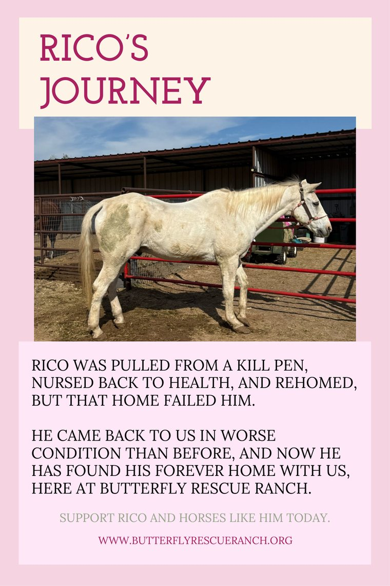
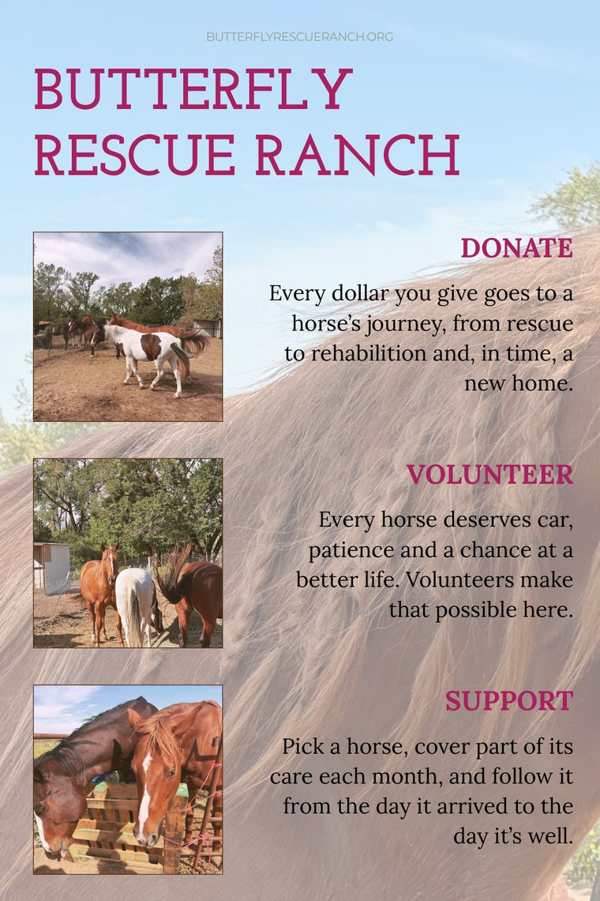
“Every horse arrives with a different story, but they all need the same thing: someone who believes in them.”
From the print ad’s body copy
07
Brand Kit
Butterfly Berry
#AA2060 · primary
Blush Pink
#FEE7F8 · background
Soft Rose
#F6D3E1 · secondary
Warm Gray
#8E8D93 · logo grey
Charcoal
#2D2B30 · text
Sage Green
#97A28A
Warm Cream
#FDF4E7
The Ranch Changes Lives
Josefin Slab · main headings
Butterfly Ranch is a local nonprofit
Lora · body and details
Together
Allura · accent script
RANCH
Cinzel · ranch wordmark
Voice
hopeful · compassionate · transparent · community-centered
Buttons: a soft berry button for calls to action
08
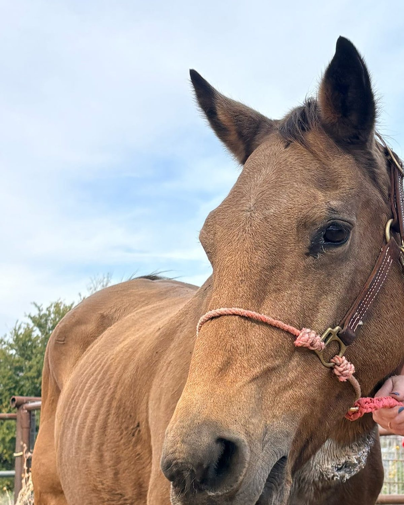
Dandelion“Once she had a little bit of love and a little bit of time to realize that nobody was going to hurt her anymore, she was able to be put into the riding lessons.” Ranch staff
Online
Website, social, email, and what it takes to keep them running
Problem
Key findings
Lack of donor support, driven in part by static digital channels
- Outdated Website: doesn’t reflect current operations, and donors must contact Braxton directly to give
- Inactive Social Media: no updates since July 2025, and content doesn’t reflect the ranch’s current mission and operations
No posts since July 2025
Butterfly Rescue Ranch’s outdated website and silent social channels make it hard for supporters to see what the ranch does, trust it, and give.
Solution
Stakeholder interviews showed that their target audience cares most about individual horse stories, making them the foundation of the marketing plan.
- Social Media: Show each horse’s journey, from where they were before arriving to where they are today, including background, personality, rehabilitation, and current needs
- Website: Feature each horse’s story under the “Sponsor a Horse” tab
- Email: Send regular updates to current sponsors (key facts and progress on their horse) and to subscribers (horse stories that highlight sponsorship for those on the fence)
Sharing the same stories across every platform creates a cohesive experience and builds a more meaningful connection with supporters.
09
Social Post
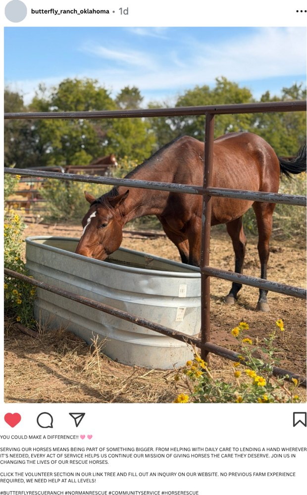
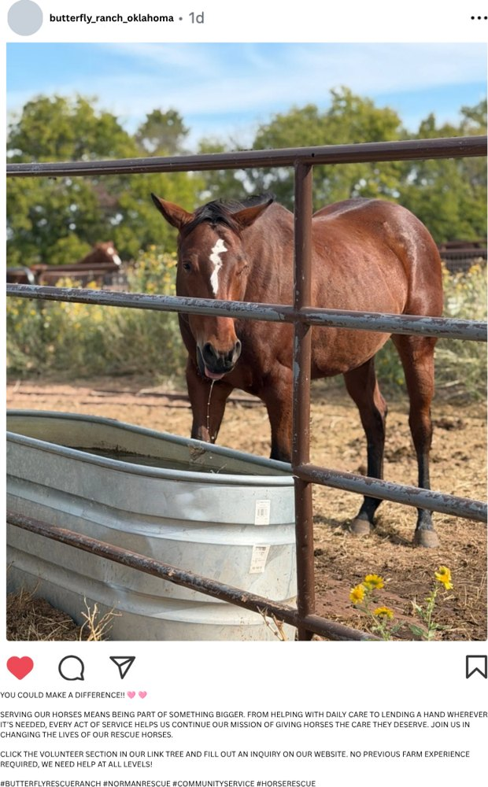
The caption
You could make a difference!
Serving our horses means being part of something bigger. From helping with daily care to lending a hand wherever it’s needed, every act of service helps us continue our mission of giving horses the care they deserve. Join us in changing the lives of our rescue horses.
Click the volunteer section in our link tree and fill out an inquiry on our website. No previous farm experience required, we need help at all levels!
A concept carousel calling for volunteers: three photos, one caption (two shown).
10
Website Homepage
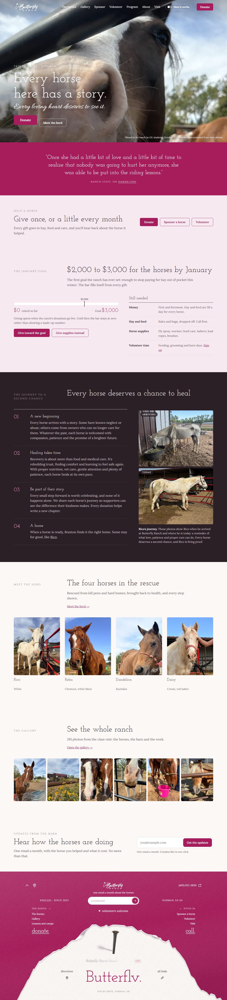
The concept site, built by Station Solutions (Charlie’s company, donated to the ranch) with the class’s changes. Some hero shots are animated from the class’s photos.
Homepage notes
- Larger Donation button
- Headline: “Every horse here has a story, every loving heart deserves to see it”
- Change “horse rescue - Norman OK” to the address
- Rico’s Journey: before and after
- “The horses at ranch right now” becomes “Meet the Herd”, with only the horses in the rescue program
- Remove the “our program” section (riding lessons and party bookings)
10
Email Plans
Welcome to the Butterfly Rescue Ranch Family!
First-time donors and new supporters
When sentAfter someone makes their first donation
Your Kindness Makes a Difference!
Anyone who makes a donation
When sentAfter a donation is received
See the Difference You’re Making!
Previous donors and supporters
When sentApproximately one month after a donation
Your Monthly Ranch Update!
People who make recurring monthly donations
When sentOnce a month
Meet the Horse You’re Helping!
Donors who choose to sponsor a specific horse
When sentAfter someone begins sponsoring a horse
A Special Update From Your Sponsored Horse!
Donors who sponsor an individual horse
When sentOnce a month, when new updates are available
Meet Dandelion: A Horse With a Personality of Her Own!
Current donors, previous donors, and potential horse sponsors
When sentOnce a month, featuring a different horse
Thank You for Celebrating With Butterfly Rescue Ranch!
Families who have booked a party or event at the ranch
When sentWithin 1–2 days after their party or event
From the email plans: subject line, who gets it, and when it goes out
11
What It Takes
| Cost | Time | How it works | |
|---|---|---|---|
| Social media content creation and management | $0 | 5–6 hours per week | Braxton/Current Staff film content; Braxton writes captions and schedules posting |
| Dispatch Station tool | $94/month list price* | <1 hour/week for writing emails using provided templates | Station Solutions provides templates and automates sending; Braxton uses templates to write emails |
| StoreFront Station tools | Unlisted monthly subscription* | <1 hour per week for website updates on current horses and donation item priorities | Station Solutions provides website and maintenance, Braxton updates for current horses in program, donation priorities, and upcoming events |
*Currently stated that Station Solutions will not be charging the client. Station Solutions is run by Charlie, a member of the class.
12
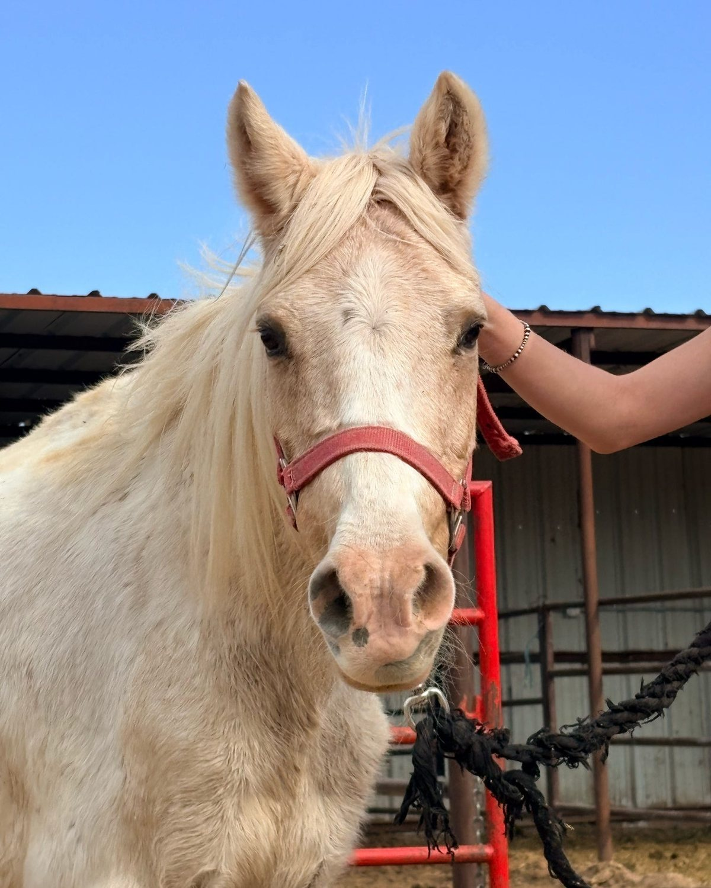
Daisy“She was a skeleton when they picked her up. She’s a pretty big mystery, honestly.” Ranch staff
In the Community
Sponsors and partners, video, the community map and the PR plan
Problem
Community interest isn’t turning into consistent donations, sponsorships, or volunteers
- High Need for Support: Braxton has four rescue horses and covers much of their expenses out of pocket
- Stronger Partnerships: the ranch needs deeper ties with community organizations
- More Awareness: rescue horse stories need to reach a wider audience
- Better Follow-Up: supporters need ways to stay involved after visiting
Solution
- Sponsor-a-Horse Program: donors contribute toward specific horses and receive updates on their progress
- Local Partnerships: reach out to feed stores, veterinarians, and other local businesses for financial sponsorships or donated supplies
- Awareness: share rescue stories through short videos, local press releases, and community events
- Personal Outreach: staff use a simple, personal approach with visitors and volunteers, encouraging them to donate, sponsor a horse, or stay involved
A sponsor-a-horse program, local business partnerships, and personal outreach will help Butterfly Rescue Ranch turn visitors into long-term supporters.
The four rescue horses
Rico
Reba
Dandelion
Daisy
13
What It Takes
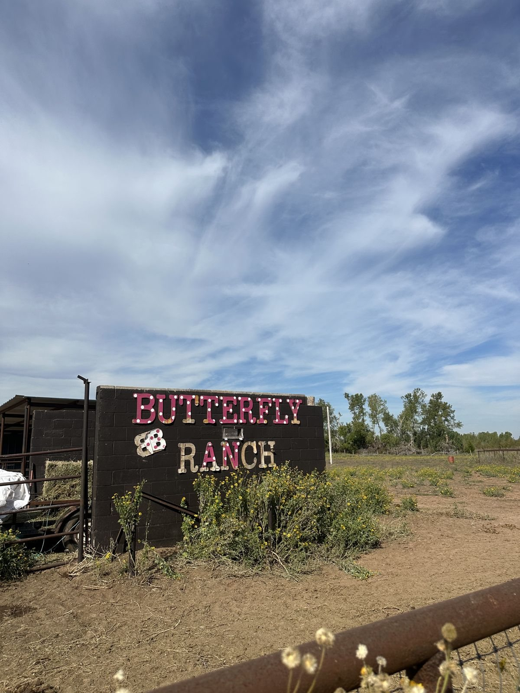
| Cost | Estimate | Notes | |
|---|---|---|---|
| Video Ad | $0 | 2–3 | Anyone: resharing links of posted or new content is free on YouTube and other platforms. |
| Boosted Advertisement | $1–$100 | 10–20 | In the event more reach is wanted, advertisements can be boosted so a wider audience can be reached. |
18
Short Storyboard: Rico
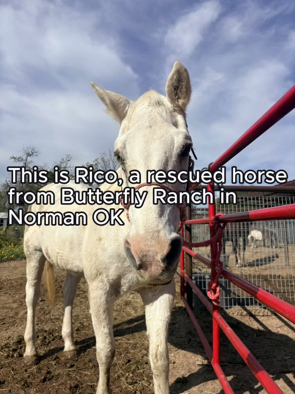
This is Rico, a rescued horse from Butterfly Ranch in Norman OK
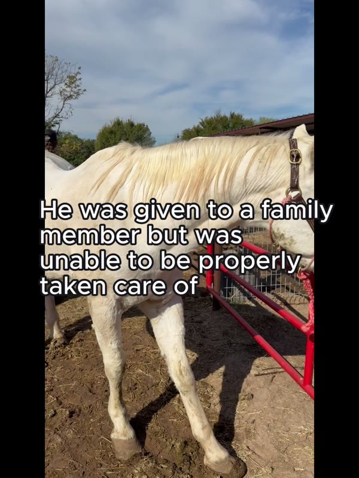
He was given to a family member but was unable to be properly taken care of
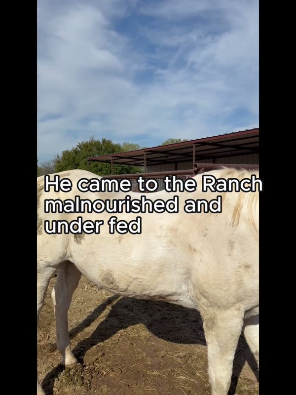
He came to the Ranch malnourished and under fed
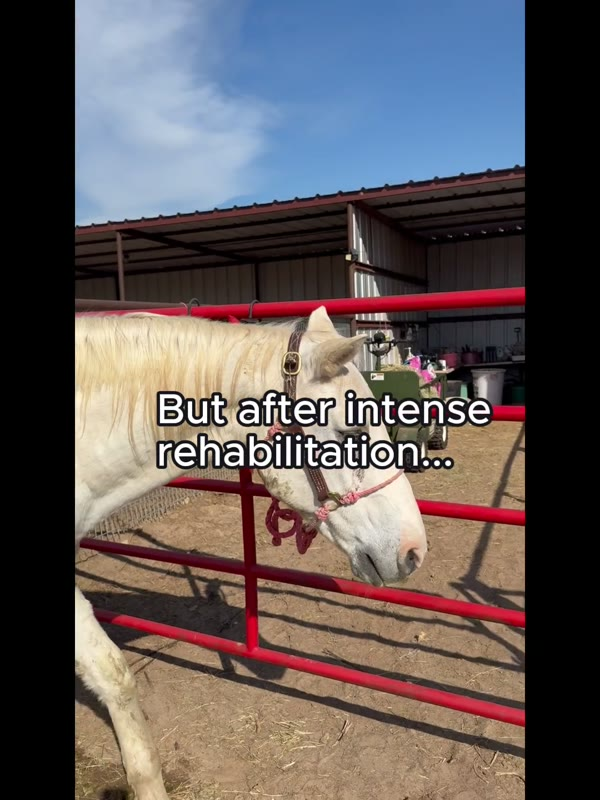
But after intense rehabilitation…
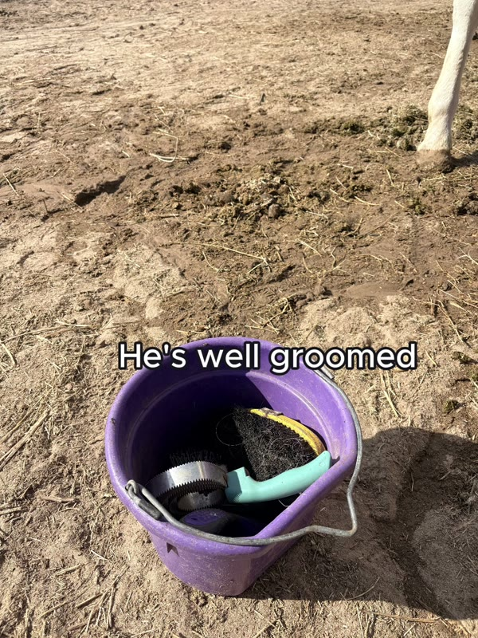
He’s well groomed
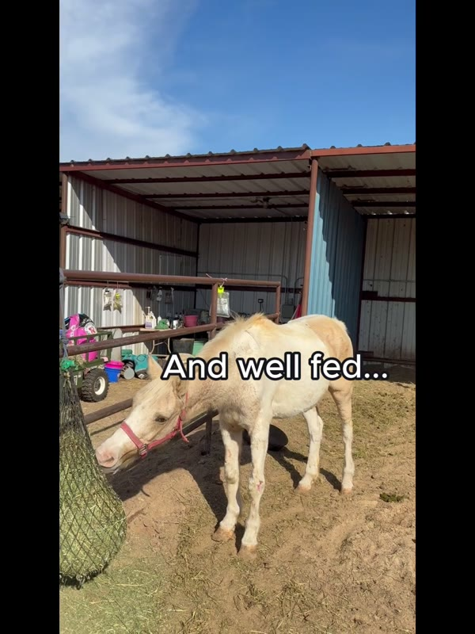
And well fed…
A 16-second vertical video, cut from the class’s own footage. The captions are on screen, so it works with the sound off.
15
Community Connection Map
RanchNorman, Oklahoma
Community Partners
- 1Earth Rebirth
- 2WildCare Oklahoma
- 3OU Equestrian Team
- 4Cleveland County Master Gardeners
- 5Little Britches Rodeo
- 6Norman Chamber of Commerce
Media
- 1The Norman Transcript
- 2OU Daily
- 3Local Facebook groups
- 4KOCO 5
- 5KGOU (106.3 FM)
Donors and Sponsors
- 1Community foundations (Cleveland County)
- 2First United Bank / local credit unions
- 3OU Federal Credit Union
- 4E.L. and Thelma Gaylord Foundation
- 5Local feed and farm supply store
- 6Langston’s Western Wear
Volunteers
- 1OU students (OU Big Event)
- 2OU GivePulse volunteer platform
- 3Cleveland County 4-H clubs
- 4OU student media and marketing organizations
16
PR Plan
Core messages to develop
- “We are a nonprofit that saves horses from dangerous situations.” (to confirm)
- “Our why is…” in Braxton’s own words (to come)
- “Every horse’s journey matters.”
- Every horse has a story; every loving heart deserves to see it.
Story 1
Total Transformation
A horse that has had a complete 180 turnaround, from arrival to rescue, rehabilitation, and adoption out or continued competition. It shows the organization can successfully operate and has the tools needed to care for a horse, and it builds trust among potential donors.
“From Unusable to Unstoppable”
Story 2
Surrender Story
A horse who was given up to the rescue by its owner or by a rescue operation. It shows the rescue can be relied on as a community safety net when necessary.
“The Unseen Norman Safety Net, Keeping Norman’s Equine Community Together”
Story 3
Companion Match
A horse who may have failed the adoption process or was unfit to return to riding, and was adopted by the ranch. It shows the ranch doesn’t cut corners or give up when the path to adoption becomes complicated.
“Every Horse Has Their Day: The Successful Adoption Story of…” (horse to be chosen)
From the PR plan outline: build awareness, center emotional horse journeys, compassionate care, and donor trust
17
Twelve Weeks, Three Stories (dates to confirm)
1 · Proving Operational Capability
- Weeks 1–2All preparation work, such as gathering “before” images for the selected horse.
- Week 3Reach out to Norman media outlets with the story and hook.
- Week 4Digitally push the story.
2 · Community Safety Net
- Weeks 5–6Preparation work; find a horse that was voluntarily surrendered to the rescue.
- Week 7Reach out to Norman broadcast stations, such as OU Daily.
- Week 8Digitally push the story on Facebook and Instagram through reels.
3 · Demonstration of Integrity
- Weeks 9–10Gather all relevant history of the resident horse and draft an outreach story relating to “Every Horse Has Their Day.”
- Week 11Package this specifically for community foundations, such as the Kirkpatrick Family Foundation.
- Week 12Launch a targeted sponsorship campaign with this horse as a dedicated ambassador.
Talking points for Braxton · 1
Can you tell us about Butterfly Rescue Ranch and how it helps horses that have been in dangerous or difficult situations?
2
What made you want to start Butterfly Rescue Ranch, and what keeps you motivated to do this work?
3
Can you tell us about one horse whose journey really shows what Butterfly Rescue Ranch is all about?
18
Questions?
About $360 a month covers one horse’s feed, hay, supplements and farrier care.
The recommended Giving Tuesday goal, $2,000–$3,000 by January 2027, is about 5½ to 8 months of that care for one horse. The ranch has four.
Our arithmetic from Braxton’s figures in the class creative brief: hay and feed $9 a day, supplements $50 a month, farrier $50 every six weeks. Vet care is extra.